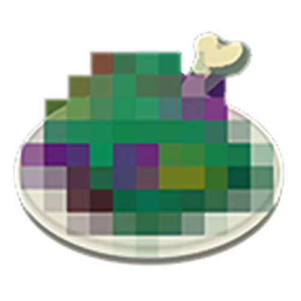

Fun online game (Realeased only on Nintendo Switch) about squid and octopus people who paint walls and floor and sometimes shoot each other and/or commit horrible war crimes(not a gameplay feature). Alternatively, there is a story mode where you navigate a post-apocaliptic rocket launch site, a cooperative mode where you fight fish to steal their children and almost die trying and then get paid in lottery tickets and sometimes a pair of shoes, and a 2 player card game. Splatoon 2 doesn't have the card game and has a different story mode, but the weapons availible for the player-versus-player modes are different and, due to the game being older, more numerous. All of the main and sub weapons were transfered to the third game, but a third type were almost all changed, so I do sometimes play the second game for that reason (Give me burst bomb Vdualies back). The design of the tools/weapons is very unique, while some are just water guns, others are fire hydrants, windsheild wipers, glue guns, umbrellas, tents, dual toothbrushes or hair dryers. The weapons are only availible in groups of 3, one main(water guns, paint rollers, paintbrushes, and swords, many of which are better suited to painting than they are to combat), one sub (usually bombs), and one special (a larger one that requires painting the floor to charge it up and activate it), and the groupings are different between the 3 games(If you use the hydra splatling, in comes with autobomb and booyah bomb in 3, where it has a different kit in 2. By the end of 2, most weapons had 3 kits to choose from) (I only have 2 and 3, as 1 was realeased on the Wii U, which I don't have).
A little social mobile game (also on Switch, Playstation, and soon PC), lots of character customisation. No ads, a few in-app-purchases, but just about everything you could buy with them can be obtained by other means (if only eventually, certain items are only availible during certain events for a couple weeks, like some party hats during the game's anniversary). There's not really much to do outside of interacting with other players, but they do have events quite frequently, many of which stay in some form after they officially end, so there isn't nothing do do. Outside of that, it is an absolutely gorgeous game, and its world is fun, even just to move around in (the controls are nice, at least on console) and take pictures of with the in-game cameras. (which might make finding photos for this hard, having to choose only a few)
Also a mobile game, but very distinctly different. It's a stretagy game of sorts, where you build armies to capture enemy cities. Like Sky, there aren't ads, but the in-app purchases are more numerous, if overall significantly cheaper. You start with 4 of the game's 16 playable characters (tribes), and the rest all cost a dollar or two. The starting ones are varied and powerful though(they play very differently), and many consider two of them to be among if not the most powerful options in the game.
That's a big one, this might take a while. Uh giant game, of course, just absolutely massive, take all that the previous game had (a LOT) and mulltiply it... by six!(exagerating... probably). So much to do and in all the time I've had it I've done... maybe 55%? There's a cooking system, in which I'm... far from an expert(cooking mysterious glowing rocks is smart I swear) You can like use wierd magic stuff to create giant vehicles/weapons/send annoying NPCs to the upper atmosphere and honestly for that alone it's just fun to mess around in. The enemies are fun, the fusing adds layers to the combat the are distinct from the previous game. The bosses are awesome, a huge step above the previous game's ones, which, despite being amazing and challenging in their own right, were all very simlar. The final boss especially is gorgeously cinematic and a perfect mirror of Link's (the playable character's) abilities. Plus the healthbar expanding asymetrically just adds so much to the threat. Gorgeous, great soundtrack, great mechanics, great story, great locations, great everything.